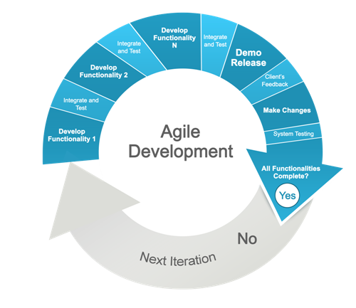

Gestão Ágil de Projetos
A gestão ágil de projetos ou desenvolvimento ágil de sotfware é uma metodologia de gestão que arrega seu principal objetivo no próprio nome e tem a ver com a economia de tempo na realização de diversas tarefas.

As características principais de uma gestão ágil são:
- Interatividade
- Iteratividade
- Flexibilidade
- Transparência elevada
O principal método de agilidade que usaremos neste semestre em EAD será o SCRUM.
O SCRUM
"A arte de fazer o dobro na metade do tempo."
O nome vem de uma formação ou jogada do esporte rugby, em que oito jogadores de cada time se encaixam para formar uma espécie de muralha humana. Atualmente, a palavra é utilizada para descrever um framework para gerenciamento ágil de projetos de software.
O SCRUM é amplamente usado no desenvolvimento de software, mas pode ser aplicado em qualquer outro segmento profissional ou, até mesmo, em projetos pessoais. Isso porque o método conta com princípios importantes que fazem com que o trabalho flua de maneira facilitada. Veja, a seguir, quais são essas bases.
| Base | Características |
|---|---|
| Autogerenciamento | Papéis e responsabilidades bem definidas, como:
|
| Agilidade | O trabalho é dividido em iterações, que são chamadas de sprints, que podem durar dias ou semenas. |
| Foco no essencial | Busca priorizar os pontos mais importantes do projeto, características que geram mais valor ao cliente (80% do valor da solução se encontra em 20% das funcionalidades.). |
| Reuniões de alinhamento | A rotina de reuniões faz parte da filosofia de agilidade e de feedbacks constantes do SCRUM, permitindo que os membros da equipe compartilhem o andamento de suas tarefas. |
| Estrutura enxuta | A abordagem do SCRUM empresarial utiliza um número limitado de participantes por projeto. Cada team (equipe de projeto) é formado por cerca de sete pessoas. |
| Colaboração | No SCRUM, é comum que os clientes se tornem parte da equipe de desenvolvimento, desde que estejam verdadeiramente interessados em colaborar e gerar o melhor resultado. |
| Transparência | Na metodologia SCRUM, todos os participantes são incentivados a cultivar a transparência, compartilhando seus problemas e dificuldades com a equipe. |
| Adaptabilidade | No SCRUM, as hipóteses (possíveis soluções para o desenvolvimento de um produto ou para o problema de um cliente) são desenvolvidas e testadas rapidamente com o objetivo de colher feedback. |
Termos mais utilizados e o que significam
- Burndown chart: gráfico do restante de trabalho a ser feito;
- Daily SCRUM: reunião rápida diária com a participação de todos os integrantes da equipe;
- Impediments: são os obstáculos que a equipe encontra e que não são descobertos durante a reunião daily SCRUM;
- Metas do sprint: são as expectativas e objetivos para o sprint. Ajudam a trazer foco e tomar decisões;
- Product backlog: é uma lista (organizada por prioridades) com as funcionalidades desejadas no produto;
- Reunião sprint planning: é a reunião de planejamento que ocorre no início de um sprint;
- Sprint: é uma sequência de atividades com prazo definido. Durante esse tempo, alguma funcionalidade do produto deve ser implementada;
- Tarefa sprint: é a menor porção de trabalho de um projeto, referindo-se a uma atividade que geralmente dura até 16 horas.